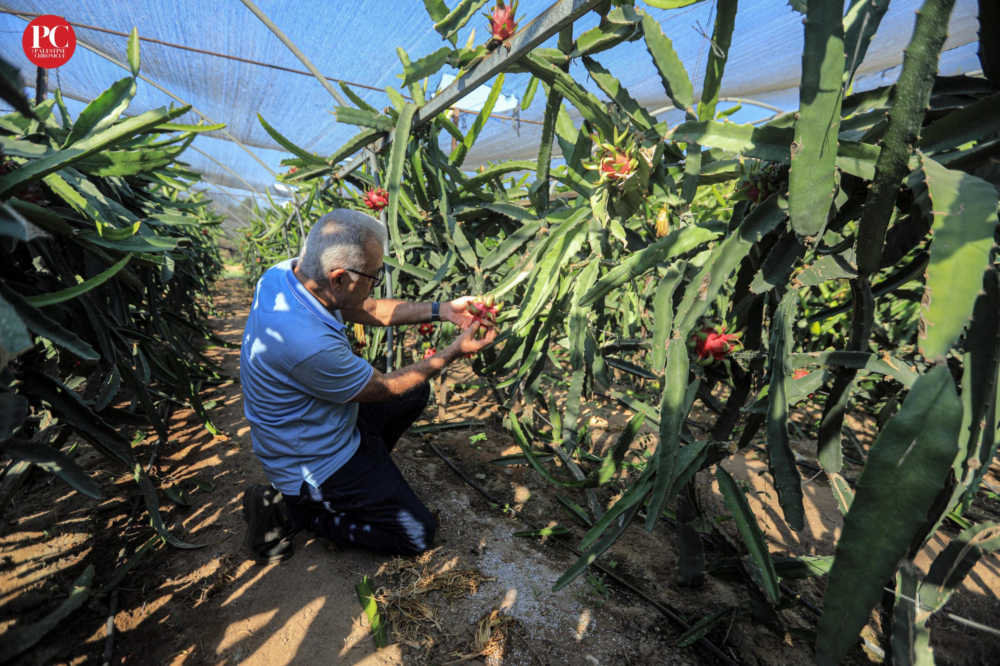

Fresh, Crispy, Heavenly.
100% Organic, vivid varieties of dragonfruit grown in fresh farms.
ABOUT US
Established in the year 2017, we are an independently-owned orchard and horticulture research centre specializing in the cultivation of Dragon Fruit: a rare and exotic fruit which is gaining increasing prominence across the globe as a superfood, a succulent fruit with great potential for value-addition and also as a highly profitable commercial crop. Spread over 30 acres in the ideal horticulture environment close to the 'Fruit Research Centre' at Sangareedy, we grow 27+ varieties of Dragon Fruit including hybrids and 7 commercial varieties: the largest selection of Dragon Fruit (varieties) in the country. Our mission is to promote commercial development of Dragon Fruit in India by educating farmers and providing training and consultancy that helps them prosper. We offer a bouquet of services to farmers including, supply of seedlings, Through our prior work on Dragon Fruit farming and by virtue of our association with a leading fruit export and import house, we bring to the table a strong understanding of the business side of farming as well, which we share with farmers for mutual benefit.
VARIETIES

White DragonFruit
This version of dragon fruit has pink skin and white flesh with black seeds on the inside. It is the most common dragon fruit available and it is known for its sweet taste.
Red DragonFruit
This version of dragon fruit shares a deep red colour between its skin and the interior flesh. , and eating it will likely stain your fingers.

Pink DragonFruit
Pink dragon fruit is basically red dragon fruit, but with pink flesh instead of red. Its flesh is a medium between the sweeter taste of the red dragon fruit and the more relatively neutral taste of the white dragon fruit.
Yellow-Dragon
This version of dragon fruit has yellow skin and a white flesh inside. Native to South America, of the dragon fruit variations, and its taste is the richest.
sour dragonfruit
This version of dragon fruit is regularly eaten in the dry regions of the Americas. While the skin is pink with white flesh, its taste is quite sour.
Blue DragonFruit
The fruits of the blue dragon are oval-shaped and have leathery skin that is bright blue. The skin has scales or bumps resembling a dragon, hence the name.
OUR SERVICE

Fresh
We deliver fresh apples with a 100% guarantee of freshness.

Fast
We deliver your orders as fast as possible, delivery procedure begins as soon as apple is plucked from tree.

Satisfying
We guarantee 100% customer satisfaction. We do our best to make your purchase experience smooth. But if we mess up somehow you will get compensated for every inconvenience.